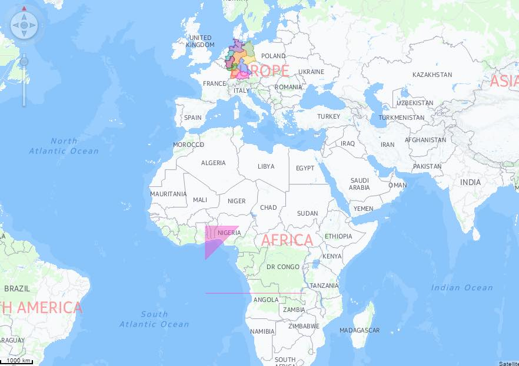

Visual Business UI5: Sample should show areas.
The aim:
To check that areas display correctly on a GeoMap.
To test:
- Check that the GeoMap control loads and contains areas.
Areas are very similar to routes. The only difference is that the first and last coordinates in areas are connected to form a closed and filled area.
